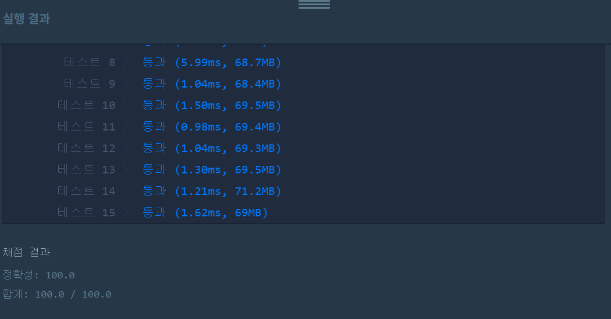

👀 문제
https://programmers.co.kr/learn/courses/30/lessons/42579
👊 도전
1. 설계
- 노래를 Music형으로 배열에 저장한다.
- 해시맵을 이용해 장르별 노래 재생 횟수를 구한 후, 재생 횟수에 따라 내림차순 정렬한다.
- 가장 많이 재생된 장르부터 각 장르별 많이 재생된 두 곡의 인덱스를 저장한다.
2. 구현
1
2
3
4
5
6
7
8
9
10
11
12
13
14
15
16
17
18
19
20
21
22
23
24
25
26
27
28
29
30
31
32
33
34
35
36
37
38
39
40
41
42
43
44
45
46
47
48
49
50
51
52
53
54
55
56
57
58
59
60
61
62
63
64
65
66
67
68
69
70
71
72
73
74
75
76
77
78
79
80
81
82
83
84
85
86
87
88
89
90
91
import java.util.*;
import java.util.Map.Entry;
/**
*
* @author HEESOO
*
*/
import java.util.*;
import java.util.Map.Entry;
class Solution {
public int[] solution(String[] genres, int[] plays) {
Music[] music=setMusic(genres, plays);
String[] sortGenres=getGenres(genres, plays);
ArrayList<Integer> list=new ArrayList<>();
for(String sg:sortGenres) {
ArrayList<Music> temp=new ArrayList<>();
for(Music m:music) {
if(m.genres.equals(sg)) {
temp.add(m);
}
}
Collections.sort(temp);
for(int i=0;i<2;i++) {
if(i<temp.size()) list.add(temp.get(i).idx);
}
}
int[] answer=new int[list.size()];
for(int i=0;i<list.size();i++) {
answer[i]=list.get(i).intValue();
}
return answer;
}
public Music[] setMusic(String[] genres, int[] plays) {
int size=genres.length;
Music[] musics=new Music[size];
for(int i=0;i<size;i++)
musics[i]=new Music(genres[i], i, plays[i]);
return musics;
}
public String[] getGenres(String[] genres, int[] plays) {
int size=genres.length;
HashMap<String, Integer> map=new HashMap<>();
for(int i=0;i<size;i++) {
String key=genres[i];
int value=plays[i];
map.put(key, map.getOrDefault(key, 0)+value);
}
TreeMap<Integer, String> tree=new TreeMap<>(Collections.reverseOrder());
for(Entry<String, Integer> entry:map.entrySet()) {
tree.put(entry.getValue(), entry.getKey());
}
String[] result=new String[tree.size()];
int idx=0;
for(Entry<Integer, String> entry:tree.entrySet()) {
result[idx++]=entry.getValue();
}
return result;
}
}
class Music implements Comparable<Music>{
String genres;
int idx;
int times;
public Music(String g, int t) {
this.genres=g;
this.times=t;
}
public Music(String g, int i, int t) {
this.genres=g;
this.idx=i;
this.times=t;
}
@Override
public int compareTo(Music m1) {
if(this.times<m1.times) return 1;
else if(this.times==m1.times) return 0;
else return -1;
}
}
3. 결과
 🤟 성공 🤟
4. 설명
- genres와 plays를 이용해 Music형으로 노래를 저장한다
- setMusic() 메소드로 구현하였다.
- Music 클래스를 선언한다. genres는 장르, idx는 고유 인덱스 번호, times는 재생 횟수이다.
- 생성자는 파라미터를 두 개 가지는 것과 세 개 가지는 것이 있다. 첫 번째는 장르별 가장 많이 재생된 것을 구할 때 사용하기 위함이고, 두 번째는 노래 한 곡을 저장하는 생성자이다. compareTo()는 Music형 클래스를 정렬할 때 재생 횟수에 따라 내림차순 정렬한다.
- setMusic()에서 i번째 노래를 Music형으로 객체를 생성해 배열에 저장한 후 리턴한다.
- 가장 많이 재생된 장르순을 구한다
- 해시맵을 통해 장르별 총 재생 횟수를 구한다. getOrDefault()를 통해 key에 대해 기존 value가 없으면 0을 주어 현재 value를 더한다.
- 해시맵으로 장르별 총 재생 횟수를 구하면, TreeMap을 이용해 재생 횟수 기준 내림차순 정렬한다. 해시맵에서는 정렬이 불가하기 때문에 TreeMap을 사용하며, key 기준으로 정렬하기 때문에 해시맵에서 TreeMap으로 값을 전달 및 저장할 때 key와 value 순서를 바꾼다. key는 중복되면 안되는데, 문제 조건에서 장르별 총 재생 횟수는 중복되지 않는다고 했으므로 데이터가 손실되지 않는다. 내림차순 정렬을 위해 Collections.reverseOrder()을 이용한다.
- TreeMap에 해시맵 값을 넣으면 재생 횟수 내림차순으로 정렬되고, 하나씩 빼서 String[]에 장르를 저장, 리턴한다.
- 장르별 가장 많이 재생한 노래를 두 개 저장한다
- ArrayList
list에 장르 순서대로 인덱스를 저장한다. - 정렬된 장르 sortGenres[]에서 순서대로 장르를 뽑고, music[]을 모두 체크하며 특정 장르를 모두 뽑아 temp에 저장한 후, Collections.sort()로 재생 횟수 기준 내림차순 정렬한다. temp에서 정렬된 기준으로 인덱스를 최대 2개 뽑아 list에 저장한다.
- list는 Integer형이고, 리턴은 int형 배열이므로 형변환하여 리턴한다.
- ArrayList